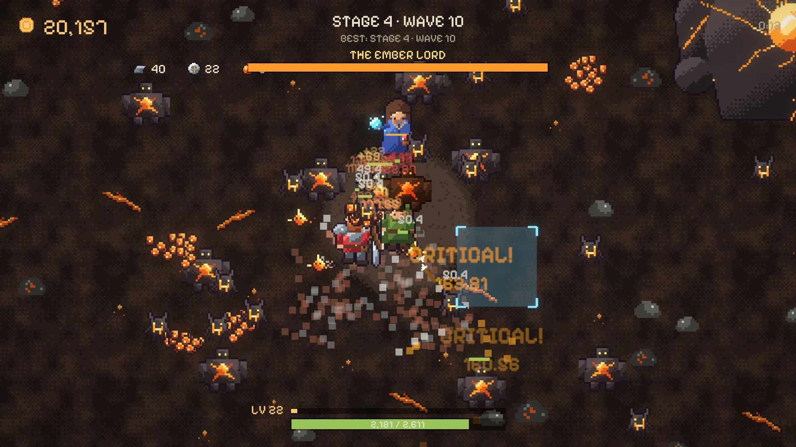
Floppy Key · Disk 02 · Free demo out now
THE SEAL QUESTDreams of Ormaz
Every epic you hunt wakes something bigger.
An incremental defense RPG. Hold the clearing, aim at whatever gets close, spend what you earn and go back for more. Hunt the epics. Wear what they leave behind.
Top heroes
Pick a nick when you start the demo and your hunt shows up here: insignias first, then the highest wave, then level.
| # | Hero | Level | Wave | Insignias | Enemies |
|---|
The trailer
Aim. Upgrade. Hunt.
At first the waves walk right over you. That's the deal: every run you die a little further, and every run pays for something new.
Just aim
Mouse only, no clicking. Arren shoots whatever is under the reticle, so your hand never gets tired and you never miss for the wrong reasons.
Grow stronger
A skill tree with four branches, companions with their own talents and a forge. Each run starts back at the wall, stronger than the last.
Hunt the epics
At the end of every land waits an epic: a huge beast with its own presentation, its own fight and a unique piece of loot you can only get from it.
- 60+ enemies on screen
- Mouse only, no clicking
- EN · ES fully translated
- Pixel art drawn by code, pixel by pixel
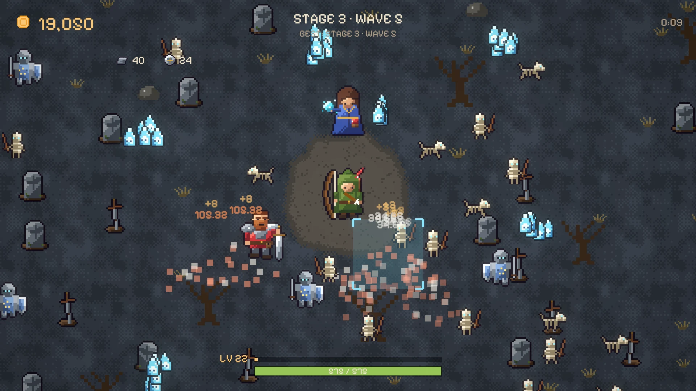
A world asleep on a dragon
The March of Vael rests on Ormaz, the Ember Mother, a dragon who curled up to sleep before the world began. She dreams. A thousand years ago her nightmares crawled out of the ground as beasts: the epics.
The Order of the Fifth Seal locked them away with oaths that would hold for a thousand years. Nobody thought the Order would last less than its promise. The thousand years are up, and the seals are breaking.
Arren is no hero. He's a village archer who was far away the day the thorns took Grayford. Now he has a bow, a reason and a company that keeps growing.
“Look at the cut. It didn't break with age. Someone opened it with a key. From outside.”— after the first epic falls
The epics
Each one is a dream of the dragon wearing the shape of something the March once knew. Each one gets a presentation of its own before the fight, and leaves a unique piece behind when it falls.
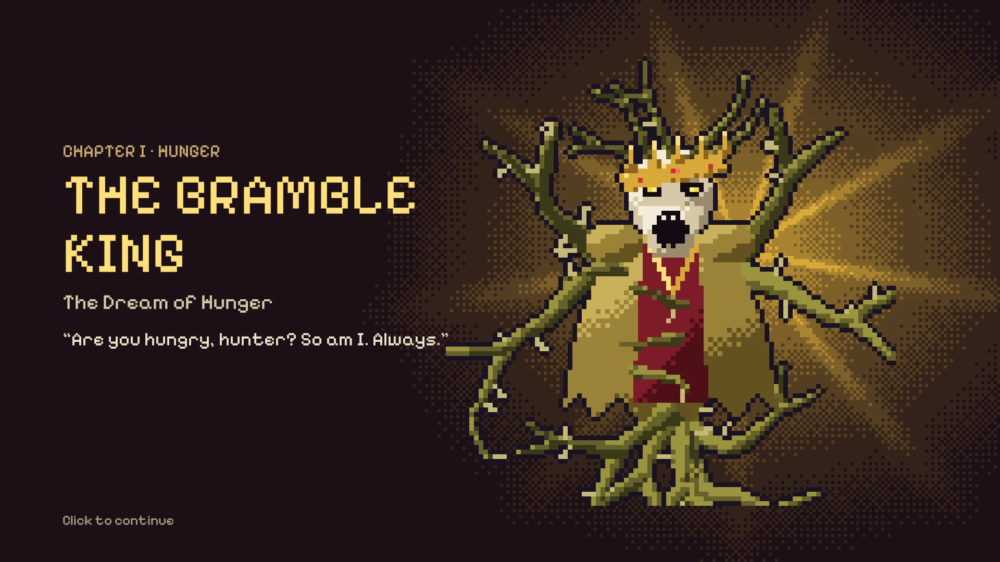
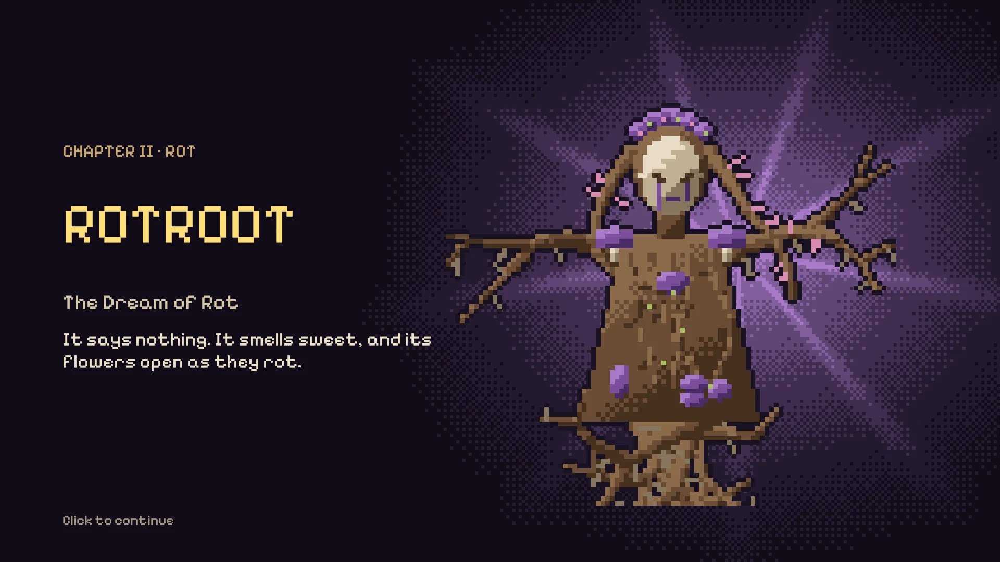
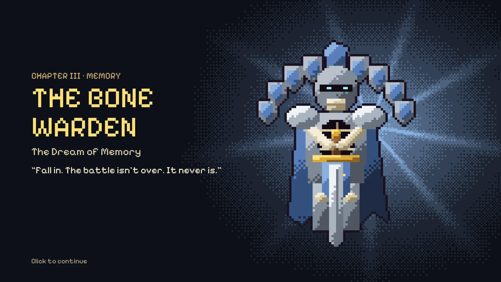
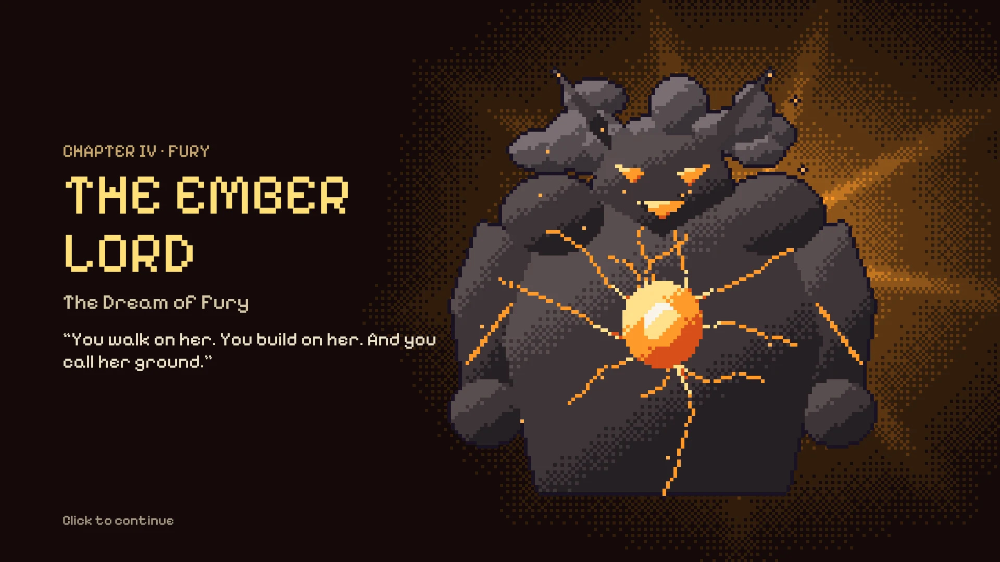
The demo covers the first four lands of the March. The full game goes much further: more lands, more epics and more of what's sleeping underneath.
When an epic walks in
The common waves don't stop for it. The crowd keeps coming while you chip at its health bar, and when it falls, it falls loud.
Your company
You aim for Arren. The others join along the way, fight on their own, level up, learn talents and take their place in the formation around him.
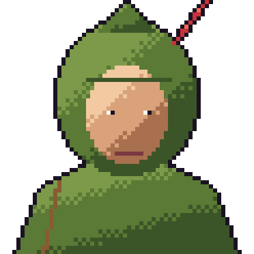
Arren
I'm no hero. I'm the one who was far away that day.
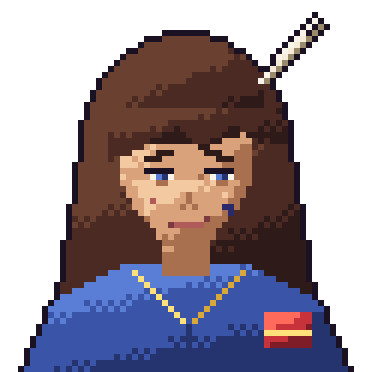
Isaura Kell
Technically, this is my fault. Partly. A small part.
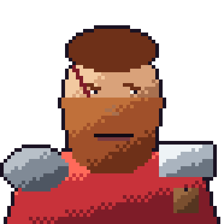
Brannoc Half-Gold
How much does it pay? No, really, how much?
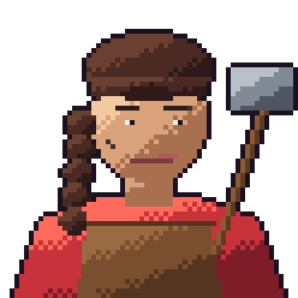
Brunna, the smith
See it? Odrun's spark. Don't you dare bring it back like that.
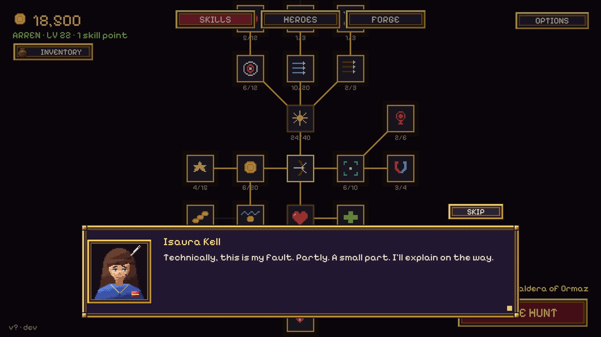
Loot that feels earned
Every epic leaves a chest the first time it falls, and a piece of gear nobody else in the March has. You see it on Arren's sheet the moment you take it.
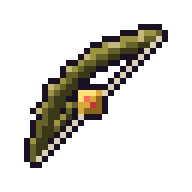
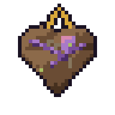
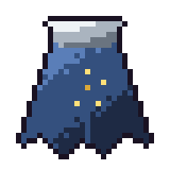
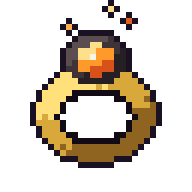
Then you take it to Brunna. She crafts helmets, breastplates, gauntlets and boots from the metal the epics drop, and enchants anything from +1 to +10.
- Never fails. Never breaks. Never goes down.
- +4 it starts to glow, +7 it sings, +10 it's not yours anymore.
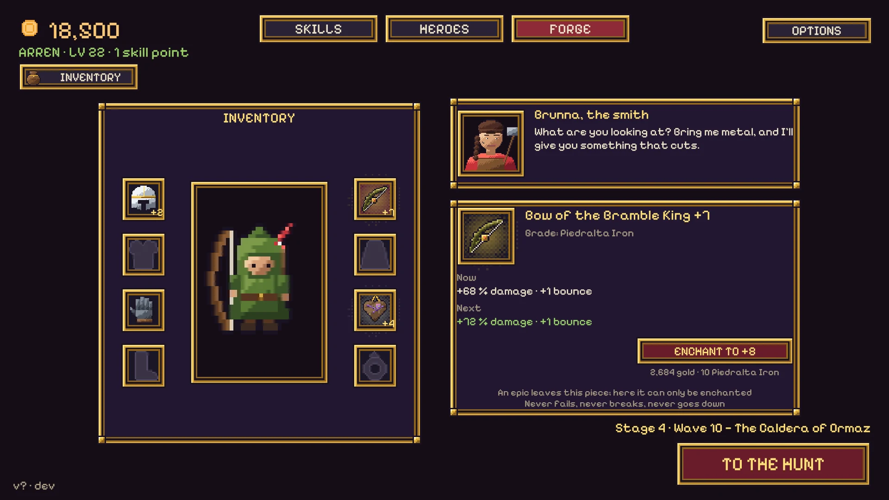

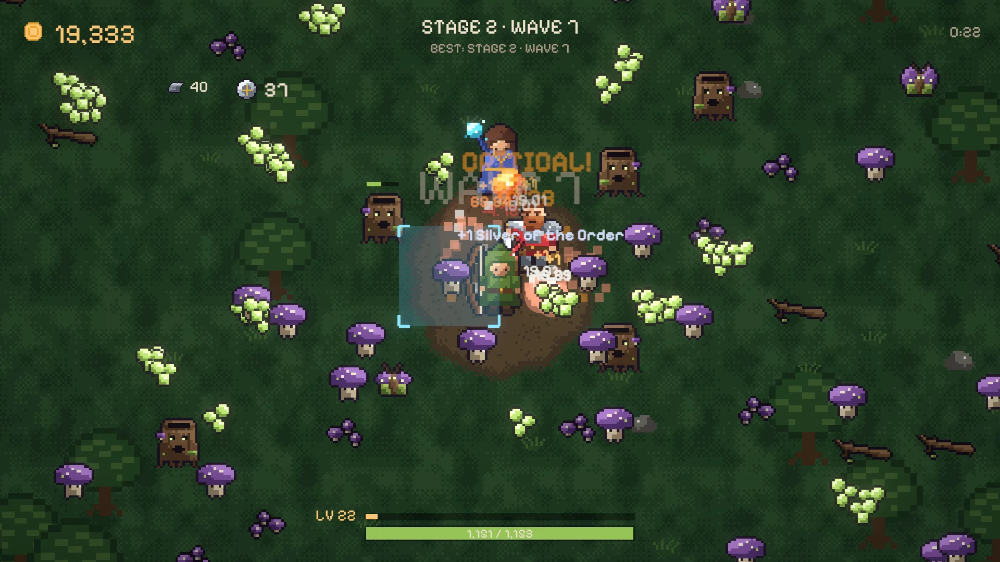
Coming in the full game
The demo is the first four seals. The full hunt goes much further.
Special epics
The elemental raids
Every cycle you complete teaches Arren a key and opens a place on the map of the March. No waves, no clock: just the company, a raid boss and its guards, and a fight that changes shape as it goes.
- Three phases. Between each one the boss mutates: it flashes, shakes, grows and comes back angrier.
- Guards that return. Four of them, and every time one falls it comes back a little faster.
- A key for every lock. Kalderys hides behind a flame shield that only the frost of the Order can put out.
- A jewel of its own. The Heart of Kalderys: +20 % damage and arrows that burn, in a slot nothing else can fill.
Many more epics
New lands, each with its own epic, its own fight and the gear it leaves behind.
Six heroes
Sister Edda the paladin, Brother Tobías the cleric and Nix the rogue join Arren, Isaura and Brannoc, each with their own talents and story.
Choose your main
Pick which hero you aim for and build the company around them.
More skills to learn
A bigger skill tree, with new ways to shoot, hit and hold the line.
Dungeons
Go down below the March: dungeons with their own rooms, traps and treasure, far from the clearing.
More story
What the seals were really holding back, and the way the hunt ends.
Play the demo now
A free demo with the first four epics, about half an hour of play, in your browser and on Windows. Made by one person in Argentina. The full hunt is coming to Steam.